The goal of this algorithm is to predict a leaf temperature at which the costs for maintaining photosynthesis are minimal. To do this, two optimization algorithms are required as displayed in Figure 4.1, the numerical P-Model algorithm and the energy balance algorithm.
The numerical P-Model algorithm solves the optimization problem to find the values for \(V_{cmax}\), \(J_{max}\), and \(g_{s}\) at which the carbon costs for maintaining photosynthesis are minimal (explained in Chapter 3). Due to difficulties in defining the cost factor for \(J_{max}\), the current implementation solves a reduced problem where only \(V_{cmax}\) and \(g_{s}\) are optimized (see Chapter 7 for resolving this issue):
\[
\frac{\beta \;V_{cmax} + 1.6\;D\;g_s}{A_{gross}} = min.
\]
The energy balance algorithm searches for the leaf temperature that closes the energy budget described in Chapter 5. Certain terms within the energy balance depend on assuming a leaf temperature in the first place. This turns the algorithm into an optimization problem where the goal is to minimze the squared difference between the initially assumed leaf temperature (\(T_{\text{leaf, init}}\)) and the leaf temperature that closes the energy balance (\(T_{\text{leaf, eb}}\)):
\[
(T_{\text{leaf, init}} - T_{\text{leaf, eb}})^{2} = min.
\]
The algorithm visualised in Figure 4.1 reads as follows:
1. Pick random values for vcmax, jmax, gs
2. Pick random value for tc_leaf (initial leaf temperature)
3. Calculate the energy balanced given tc_leaf, gs, abiotic environment
4. Check if initial tc_leaf equals tc_leaf that closes the energy balance:
If false, re-run energy balance with a new tc_leaf
If true, then proceed
5. Use tc_leaf, vcmax, jmax, gs, abiotic environment to calculate the carbon costs
6. Check if carbon costs are minimal
If false, re-start at 1. with new parameters for vcmax, jmax, and gs
If true, return tc_leaf, vcmax, jmax, gs
Describe all functions used in here
Functions needed
Numerical optimization routine for
Leaf Energy Balance
For Vcmax/gs
Cost function
Visualise cost optimization
Explain nested optimization
Closing the Energy Balance
Cost Minimization

Figure 4.1: Algorithm for calculating optimal traits using the numerical P-Model coupled to a leaf energy balance model. The numerical P-Model parts are in purple. The energy balance model parts are in organge. Note that $J_{max}$ is implemented here for reasons of completeness. The current optimization routine does not properly optimize $J_{max}$.
4.2 Implementation
The function calls below are ordered in decreasing order they are called in the routine. This means that the text starts with the energy balance model and then move outwards to the optimization of the leaf traits.
Demonstration of the numerical P-Model algorithm without considering the leaf energy balance. Comparing the results of the numerical P-Model against the analytical P-Model shows that they achieve a similar \(\chi \approx0.68\) but with quite different values for \(V_{cmax}\), \(J_{cmax}\), and \(g_{s}\)